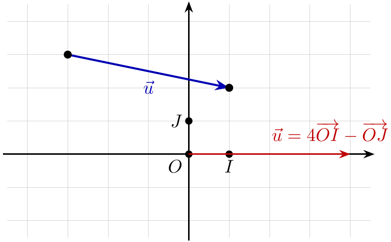
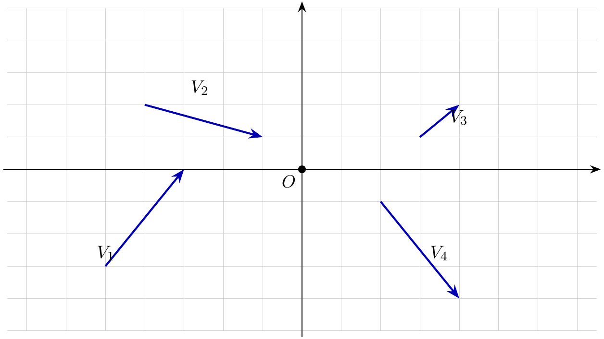
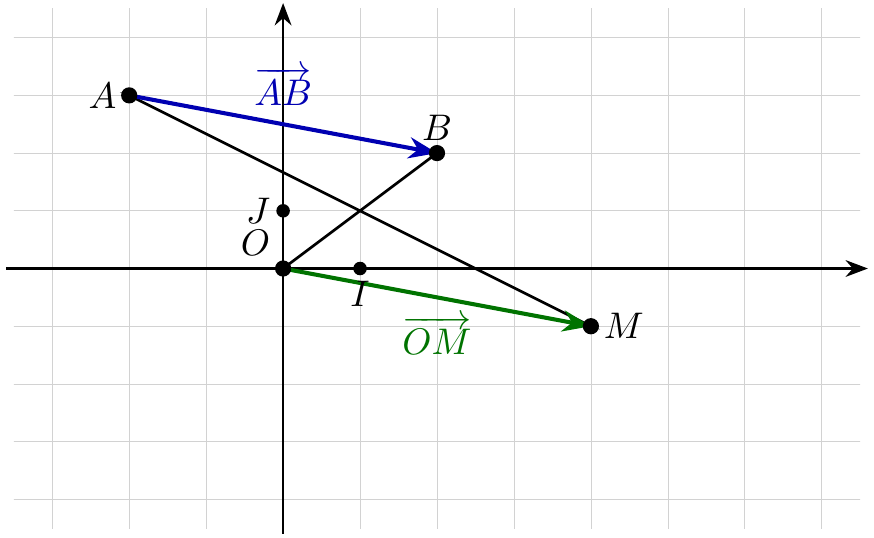
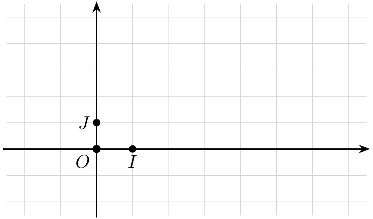
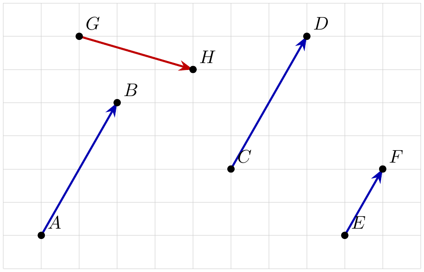

Chapitre 9 : Les vecteurs avec coordonnées
Seconde · Chapitre 9 — Les vecteurs avec coordonnées · cours de Frederik de Peyrelongue
I. Coordonnées d'un vecteur
Exercice : exprimer le vecteur $\vec{u}$ en fonction de $\OI$ et de $\OJ$.

1.1 Définition
Soit $(O\,;I\,,J)$ un repère du plan et $\vec{u}$ un vecteur donné.
On considère la translation $t_{\vec{u}}$ de vecteur $\vec{u}$. La translation $t_{\vec{u}}$ associe au point $O$ un unique point $M$ tel que $\vec{u}=\OM$.
Les coordonnées $(a\,;b)$ du point $M$, image du point $O$ par la translation $t_{\vec{u}}$ de vecteur $\vec{u}$, sont appelées coordonnées du vecteur $\vec{u}$, dans le repère $(O\,;I\,,J)$.
On note $\vec{u}\begin{pmatrix}a\\ b\end{pmatrix}$.
- Donner les coordonnées du point $O_{1}$, image de $O$ par la translation de vecteur $\overrightarrow{V_{1}}$, puis en déduire les coordonnées du vecteur $\overrightarrow{V_{1}}$.
- Par le même procédé, établir les coordonnées des vecteurs $\overrightarrow{V_{2}}$, $\overrightarrow{V_{3}}$, $\overrightarrow{V_{4}}$.

1.2 Coordonnées d'un vecteur $\AB$
Dans un repère $(O\,;I\,,J)$, si $A\left(x_{A}\,;y_{A}\right)$ et $B\left(x_{B}\,;y_{B}\right)$, le vecteur $\AB$ a pour coordonnées :
Remarque :
Preuve : $\AB=\OM$, donc $ABMO$ est un parallélogramme. Donc $[AM]$ et $[OB]$ ont même milieu. Soit $I$ le milieu de $[OB]$.
Donc $x_{I}=\dfrac{x_{O}+x_{B}}{2}=\dfrac{x_{B}}{2}$ et $y_{I}=\dfrac{y_{B}}{2}$. $I$ est aussi le milieu de $[AM]$, donc $x_{I}=\dfrac{x_{A}+x_{M}}{2}$ et $y_{I}=\dfrac{y_{A}+y_{M}}{2}$.
On a donc $\dfrac{x_{B}}{2}=\dfrac{x_{A}+x_{M}}{2}$, et donc $x_{M}=x_{B}-x_{A}$.
De même $\dfrac{y_{B}}{2}=\dfrac{y_{A}+y_{M}}{2}$, et donc $y_{M}=y_{B}-y_{A}$.

$A(-2\,;5)$, $B(9\,;23)$ et $C(8\,;-2)$. Calculer les coordonnées des vecteurs $\AB$ et $\BC$.
1.3 Nouvelle notation d'un repère
Le repère $(O\,;I\,,J)$ se note aussi $(O\,;\vec{i}\,;\vec{j})$, où $\vec{i}=\OI$ et $\vec{j}=\OJ$.
II. Coordonnées et opérations
2.1 Égalité entre deux vecteurs
Deux vecteurs $\vec{u}\begin{pmatrix}x\\ y\end{pmatrix}$ et $\vec{v}\begin{pmatrix}x'\\ y'\end{pmatrix}$ sont égaux si et seulement si leurs coordonnées sont égales :
Preuve : soit $M(x\,;y)$ l'image de $O$ par la translation de vecteur $\vec{u}$, donc $\OM=\vec{u}$ ; soit $N(x'\,;y')$ l'image de $O$ par la translation de vecteur $\vec{v}$, donc $\overrightarrow{ON}=\vec{v}$.
Si $\vec{u}=\vec{v}$, alors $M=N$ et donc $x=x'$ et $y=y'$.
Réciproquement : si $x=x'$ et $y=y'$, alors $M=N$ et donc $\vec{u}$ et $\vec{v}$ représentent la même translation : ils sont donc égaux.
Le plan est rapporté à un repère $(O\,;\vec{i}\,;\vec{j})$.
- Placer les points $M(2\,;3)$, $N(6\,;4)$, $R(-1\,;-1)$ et $P(3\,;0)$.
- Calculer les coordonnées des vecteurs $\overrightarrow{MN}$ et $\overrightarrow{PR}$.
- Quelle est la nature du quadrilatère $MNRP$ ?
- Calculer les coordonnées de $K$ tel que $\overrightarrow{MK}=\OI$.

2.2 Somme de deux vecteurs
Dans un repère du plan, si $\vec{u}\begin{pmatrix}x\\ y\end{pmatrix}$ et $\vec{v}\begin{pmatrix}x'\\ y'\end{pmatrix}$, alors
Preuve : soit $\AB$ un représentant du vecteur $\vec{u}$ : il existe alors un point $C$ tel que $\BC$ soit un représentant du vecteur $\vec{v}$.
On note $(x_{A}\,;y_{A})$, $(x_{B}\,;y_{B})$ et $(x_{C}\,;y_{C})$ les coordonnées respectives de $A$, $B$ et $C$.
Par la relation de Chasles, on a $\vec{u}+\vec{v}=\AC$ et donc
Mais $x+x'=x_{B}-x_{A}+x_{C}-x_{B}=x_{C}-x_{A}$ et $y+y'=y_{B}-y_{A}+y_{C}-y_{B}=y_{C}-y_{A}$.
On a donc bien $\vec{u}+\vec{v}\begin{pmatrix}x+x'\\ y+y'\end{pmatrix}$.
Soit un repère du plan $(O\,;\vec{i}\,;\vec{j})$.
- $\vec{u}\begin{pmatrix}4\\5\end{pmatrix}$ et $\vec{v}\begin{pmatrix}3\\-7\end{pmatrix}$ : calculer les coordonnées du vecteur $\vec{u}+\vec{v}$.
- $\vec{u}\begin{pmatrix}\sqrt{2}\\5\end{pmatrix}$ et $\vec{v}\begin{pmatrix}3\\-7\end{pmatrix}$ : calculer les coordonnées du vecteur $\vec{u}+\vec{v}$.
- $\vec{u}\begin{pmatrix}\sqrt{2}\\5\end{pmatrix}$ et $\vec{v}\begin{pmatrix}-\sqrt{2}\\-7\end{pmatrix}$ : calculer les coordonnées du vecteur $\vec{u}+\vec{v}$.
2.3 Produit d'un vecteur par un nombre réel
Soit $\vec{u}$ un vecteur de coordonnées $\begin{pmatrix}x\\ y\end{pmatrix}$ et $k$ un nombre réel : le vecteur $k\,\vec{u}$ a pour coordonnées
Soit $\AB\begin{pmatrix}2\\1\end{pmatrix}$ et les points $C$ et $D$ tels que $\AC=3\,\AB$ et $\overrightarrow{AD}=-2\,\AB$.
Alors $\AC\begin{pmatrix}6\\3\end{pmatrix}$ et $\overrightarrow{AD}\begin{pmatrix}-4\\-2\end{pmatrix}$.
2.4 Vecteur opposé
Soit $\vec{u}$ un vecteur de coordonnées $\begin{pmatrix}x\\ y\end{pmatrix}$ : on note $-\vec{u}$ le vecteur opposé à $\vec{u}$, qui vérifie $\vec{u}-\vec{u}=\vec{0}$ et dont les coordonnées sont
Soit $\vec{u}\begin{pmatrix}-1\\2\end{pmatrix}$, alors $-\vec{u}\begin{pmatrix}1\\-2\end{pmatrix}$.
Soit un repère du plan $(O\,;\vec{i}\,;\vec{j})$.
- $\vec{u}\begin{pmatrix}4\\5\end{pmatrix}$ : calculer les coordonnées du vecteur $\vec{v}=2\,\vec{u}$.
- $\vec{u}\begin{pmatrix}\sqrt{2}\\5\end{pmatrix}$ : calculer les coordonnées du vecteur $\vec{v}=\sqrt{2}\,\vec{u}$.
- $\vec{u}\begin{pmatrix}\sqrt{2}\\5\end{pmatrix}$ : calculer les coordonnées du vecteur $\vec{v}=-\vec{u}$.
2.5 Norme d'un vecteur
Soit $\vec{u}$ un vecteur de coordonnées $\begin{pmatrix}x\\ y\end{pmatrix}$ : la norme de $\vec{u}$ est égale à
Soit $\vec{u}\begin{pmatrix}-1\\2\end{pmatrix}$, alors $\|\vec{u}\|=\sqrt{(-1)^{2}+2^{2}}=\sqrt{5}$.
Preuve : on place le vecteur $\vec{u}$ à l'origine du repère : le vecteur représente alors l'hypoténuse d'un triangle rectangle dont l'un des côtés a pour longueur $|x|$ et l'autre $|y|$, donc, d'après Pythagore, $\|\vec{u}\|^{2}=x^{2}+y^{2}$, d'où le résultat.
III. Vecteurs colinéaires et applications en géométrie
3.1 Vecteurs colinéaires
Deux vecteurs sont colinéaires s'ils ont même direction.
Citer les vecteurs colinéaires de la figure ci-dessous.
Trouver une relation vectorielle reliant les vecteurs colinéaires à chaque fois que cela est possible.

Deux vecteurs non nuls $\vec{u}$ et $\vec{v}$ sont colinéaires si et seulement si il existe un réel $k$ tel que
$A$ et $B$ sont deux points distincts, $M$ est le point tel que
\[ \frac{1}{2}\,\AB-\frac{1}{3}\,\overrightarrow{BM}=\vec{0} . \]Exprimer $\overrightarrow{AM}$ en fonction de $\AB$. En déduire que $\AB$ et $\overrightarrow{AM}$ sont colinéaires. Placer le point $M$.
- $A$ et $B$ sont deux points distincts, $M$ est le point tel que $3\,\AB-2\,\overrightarrow{AM}=\vec{0}$. Justifier que $\AB$ et $\overrightarrow{AM}$ sont colinéaires. Placer le point $M$.
3.2 Critère de colinéarité
Soient deux vecteurs $\vec{u}\begin{pmatrix}x\\ y\end{pmatrix}$ et $\vec{v}\begin{pmatrix}x'\\ y'\end{pmatrix}$. On appelle déterminant des deux vecteurs $\vec{u}$ et $\vec{v}$ du plan la quantité $x\,y'-x'\,y$ ; on note
Soient $\vec{u}\begin{pmatrix}2\\3\end{pmatrix}$ et $\vec{v}\begin{pmatrix}1\\2\end{pmatrix}$, alors
Soient deux vecteurs $\vec{u}\begin{pmatrix}x\\ y\end{pmatrix}$ et $\vec{v}\begin{pmatrix}x'\\ y'\end{pmatrix}$.
$\vec{u}$ et $\vec{v}$ sont colinéaires si et seulement si
Montrer que $\vec{u}\begin{pmatrix}2\\-5\end{pmatrix}$ et $\vec{v}\begin{pmatrix}-3\\7{,}5\end{pmatrix}$ sont deux vecteurs colinéaires.
Écrire un algorithme qui permet de savoir si deux vecteurs sont colinéaires ou non.
3.3 Droites parallèles
Les droites $(AB)$ et $(CD)$ sont parallèles si et seulement si les vecteurs $\AB$ et $\overrightarrow{CD}$ sont colinéaires.
Preuve : si $(AB)$ et $(CD)$ sont parallèles, alors $\AB$ et $\overrightarrow{CD}$ ont donc même direction : ils sont colinéaires.
Réciproquement : si les vecteurs $\AB$ et $\overrightarrow{CD}$ sont colinéaires, les droites $(AB)$ et $(CD)$ ont alors même direction : elles sont donc parallèles.
3.4 Points alignés
Les points $A$, $B$ et $C$ sont alignés si et seulement si $\AB$ et $\AC$ sont colinéaires.
Preuve : si les points $A$, $B$ et $C$ sont alignés, alors les droites $(AB)$ et $(AC)$ sont parallèles et, d'après le théorème précédent, les vecteurs $\AB$ et $\AC$ sont colinéaires.
Réciproquement : si les vecteurs $\AB$ et $\AC$ sont colinéaires, les droites $(AB)$ et $(AC)$ sont donc parallèles ; elles sont aussi sécantes au point $A$, elles sont donc confondues : les points $A$, $B$ et $C$ sont donc alignés.
3.5 Milieu d'un segment
Soient $A$ et $B$ deux points du plan.
- $I$ est milieu de $[AB]$ si et seulement si $\AB=2\,\overrightarrow{AI}$.
- $I$ est milieu de $[AB]$ si et seulement si, pour tout point $M$, $\overrightarrow{MA}+\overrightarrow{MB}=2\,\overrightarrow{MI}$.
Le point $I$ est milieu de $[AB]$ si et seulement si les coordonnées de $I$ vérifient :
\[ x_{I}=\frac{x_{A}+x_{B}}{2} \qquad\text{et}\qquad y_{I}=\frac{y_{A}+y_{B}}{2} . \]